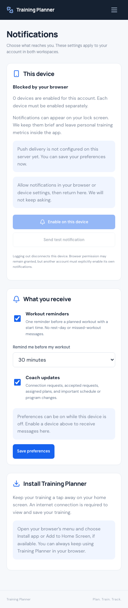
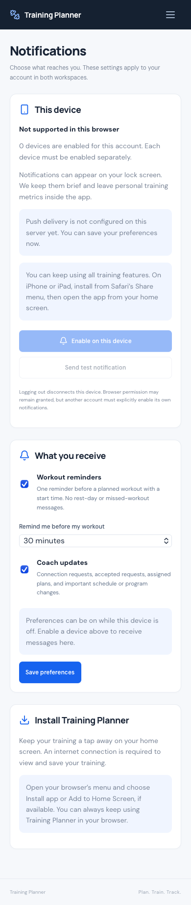

Report contents · 57 sections
1 / 57
Baseline
Continues the verified v2.1.1 production baseline and source documentation commit a10cacc60653b56941e7db418e5180f1b882fabe. Existing Laravel 12, Inertia 2, React 19, Vite 6 and MySQL architecture is preserved. Baseline: 504 tests / 10,877 assertions on each database and 28 JavaScript tests.
2 / 57
Deployment status
SOURCE RELEASE ONLY — NOT DEPLOYED. Production remains the verified v2.1.1 release. No production connection, upload, cron change or VAPID generation was performed for v2.2.0. The new brief’s explicit deployment hold overrides the older standing deploy rule.
3 / 57
PWA architecture
One manifest, one service worker and small React enhancements around the existing app. No native app, second router, new frontend framework, offline database, Firebase backend or permanent worker.
| Layer | Responsibility |
|---|---|
| Public metadata | Manifest, existing dumbbell branding, PNG icons and generic offline page |
| PwaController | Serves one worker with a content-derived version and exact public asset allowlist |
| React PWA module | Registers the worker, offers installation and controls updates |
| Notification services | Own device associations, domain eligibility, durable delivery and provider transport |
4 / 57
Manifest
/manifest.webmanifest declares Training Planner, stable ID/scope /, standalone display, safe authenticated start /dashboard, existing blue/navy branding and 192/512 px icons. Authentication redirects remain in force. A separate maskable 512 px icon keeps the dumbbell inside the safe area; Apple touch icon is 180 px.
5 / 57
Install experience
Profile and the account menu link to Notifications & install. A contextual Install app button uses the browser prompt when available. Dismissal is harmless; fallback instructions explain browser-menu installation. Installed mode shows an installed state. iPhone/iPad instructions use Safari → Share → Add to Home Screen. Permission is requested separately.
iOS/iPadOS Home Screen Web Push support and gesture requirements follow WebKit’s published guidance. Physical installation was not tested.
6 / 57
Service Worker architecture
/sw.js is rendered from resources/js/service-worker.js and the deployed Vite manifest. Its version hashes the worker, build manifest and public fallback/icon contents. The route sets JavaScript MIME, no-store/no-cache and root scope. It must be included as runtime source in a deployment artifact.
7 / 57
Cache strategy
Precache only the explicit compiled public JS/CSS/assets and generic icons/offline page, fetching without credentials. Refuse HTML substituted for a script. Authenticated HTML, Inertia, JSON/API routes, uploads and mutations never enter CacheStorage. Activation retains the current and one preceding static asset generation for already-open tabs; older app caches are removed. Cache reads for previous compiled chunks never write arbitrary responses.
Retain older hashed assets on the server during deployment as well, for unusually long-lived tabs spanning more than one update. Login and authenticated server responses explicitly use private, no-store.
8 / 57
Offline behavior
Document navigation tries the network and shows the generic “You’re offline” screen on connection failure. Already-open pages show a connection notice. Inertia visits and JSON mutations are stopped while offline; existing request errors handle other network failures. There is no queued write, automatic retry of a mutation or offline workout history. Reconnection and explicit retry restore normal navigation.
9 / 57
Update lifecycle
Installation does not call skipWaiting. A waiting worker triggers Update available. The user confirms a reload after saving work; only that requesting tab reloads. A second tab can explicitly reload later even if the worker was already activated elsewhere. Registration checks on foregrounding do not reload the app.
Uses the platform lifecycle documented by MDN: skipWaiting.
10 / 57
Active-workout update protection
Update & reload is disabled on the active-workout screen. Browser tests typed an unsaved set value, introduced a new worker, activated it from another tab and verified that both the workout input and an unrelated unsaved plan form survived without navigation. The preserved form could later reload through its own update action.
11 / 57
Push architecture
WorkoutReminders reads current ScheduleEntry state. CoachNotifications records one event after a successful transaction. PushDeliveries reserves and tracks per-device delivery; PushTransport alone speaks Web Push. Notifications run outside core workout/Coach writes. The scheduled command drains a bounded durable delivery table; it needs no queue daemon.
12 / 57
Push library / dependency decision
Added minishlink/web-push v10.1.0, compatible with PHP ≥8.2 (production baseline PHP 8.3). The maintained library handles subscription encoding, payload encryption and VAPID signing. No custom cryptography. Provider redirects are disabled and HTTP timeouts are bounded.
Primary source: Web Push PHP v10.1.0. Dependency audit also identified a pre-existing Symfony MIME advisory; its compatible patch is included.
13 / 57
Push subscription schema
| Table | Purpose / safeguards |
|---|---|
| notification_preferences | User primary/FK; reminders false, Coach updates false, default lead 60; cascade on user deletion |
| web_push_subscriptions | User FK; globally unique endpoint hash and encrypted-cookie device hash; endpoint/public key/auth encrypted at rest and hidden from serialization |
| notification_deliveries | User/device/session FKs; unique dedupe key; minimal context/payload; pending/sending/sent/failed/cancelled state, attempts, short lease, expiry and safe outcome code |
14 / 57
Notification preferences
Reminders and Coach updates are independently opt-in. Choosing a preference does not grant permission or subscribe a device. Disabling a device does not silently change account preferences. Preferences are available even when delivery is disabled or the browser is unsupported. Both workspaces use the authenticated account’s same preferences.
15 / 57
Multi-device behavior
Up to ten browser/device associations per account. Every active device may receive one copy of an eligible event. A cryptographically random encrypted HttpOnly, SameSite cookie identifies the current browser association; endpoint ownership cannot be reassigned by posting another user’s ID or endpoint. Rotating a device endpoint removes its old pending deliveries.
16 / 57
Logout / account-switch behavior
Successful logout removes the current server association before invalidating the session; successful login or registration also clears any prior association proven by that device cookie. Other devices and preferences remain. Browser permission may persist, but the next account must explicitly enable itself. The service worker closes displayed notifications on UI logout. A provider request already accepted before logout cannot be recalled; payloads remain generic and short-lived.
17 / 57
VAPID / environment handling
Configuration is environment-only: WEB_PUSH_ENABLED, VAPID_SUBJECT, VAPID_PUBLIC_KEY, VAPID_PRIVATE_KEY. Defaults are disabled and empty. Only the public application key reaches settings. Test key generation occurred in memory inside an isolated test; no production keys were generated.
The safe php artisan pwa:check reports metadata/build/worker/command PASS and VAPID MISSING locally, as expected for this held source release. It never prints key values.
18 / 57
Scheduler architecture
notifications:send is scheduled each minute with Laravel withoutOverlapping(2). Maximum 50 provider attempts per invocation, roughly 45 seconds of dispatch budget plus the final ≤5-second request, 5-minute reminder lookback and at most 500 candidates examined. Device fanout is capped. Small database claims end before HTTP. Expired metadata cleanup is bounded and retains dedupe records for 30 days.
19 / 57
Production cron requirement
After an explicitly authorized deployment, Hostinger cron must invoke Laravel every minute using the verified PHP ≥8.2 binary:
* * * * * cd /home/u867436826/domains/ahmaddalao.com/training-planner && /absolute/path/to/php artisan schedule:run >> storage/logs/scheduler.log 2>&1Resolve the real Hostinger CLI PHP path before configuring this; the placeholder is deliberate. Confirm the configured cache store supports Laravel’s overlap lock and that the job actually runs. No cron was created in this task.
20 / 57
Workout reminder eligibility
Requires current planned status, a training session, a scheduled time, no started_at, an enabled preference, an associated device and a due time inside the lookback. The command rechecks current authoritative state immediately before calling the provider. It does not reconstruct reminders from an old occurrence key or snapshot.
21 / 57
Reminder lead times
15, 30, 60 or 120 minutes; default preference value 60. Current scheduled date/time plus the selected lead form the occurrence identity. Calendar’s existing global Asia/Riyadh timezone remains authoritative, including windows crossing midnight. No invented default time and no missed-workout nagging.
22 / 57
Program Pause / End integration
Reuses ScheduleEntry::availableOnSchedule(). Held paused sessions and ended/removed future sessions cannot send. A future pause boundary preserves eligibility of workouts the existing Calendar still makes available before that boundary. Resume/shift use the saved current dates; pending obsolete reminders are cancelled at dispatch. No second lifecycle/status history system was introduced.
23 / 57
Simple Plan reminders
Simple Plan occurrences pass through the same eligibility and dedupe service. There is no program-only dependency. Calendar changes, skipped/completed status and workout start are authoritative for simple sessions too.
24 / 57
Manual-session reminders
A manual training session with a real date/time is eligible without any plan membership. Rest entries and entries with no start time are excluded. Existing ownership and workout-history semantics remain unchanged.
25 / 57
Coach notifications
Opted-in trainees receive connection requests, assignments, confirmed schedule changes and program pause/resume/shift/end updates. Coaches receive accepted-request messages. Hooks run after successful authorization and transaction commit; rejected actions and rollbacks produce nothing. One bulk action emits one event per device, regardless of session count. A queue/transport failure cannot roll back the completed business action. Pending events recheck preference and relationship state.
26 / 57
Delivery dedupe
A database unique hash combines event identity and subscription ID. Workout identity includes session ID, current date/time and lead; confirmed Coach actions use their existing signature or newly-created resource ID. Atomic compare-and-set claims ensure two senders cannot reserve the same live delivery. All retries reuse the same Web Push topic and visible notification tag. Rescheduling creates a valid new occurrence identity.
27 / 57
Retry / failure behavior
Retry temporary network/429/5xx failures at most three times, with one- then two-minute delay, provided the event is still eligible and unexpired. Permanent rejection does not loop. A crashed sender’s lease can be reclaimed after one minute. Delivery is best-effort: a lost acknowledgement can require retry after the provider already accepted a request. Stable topics/tags reduce duplicate presentation; absolute exactly-once delivery across browser/provider/network boundaries is not claimed.
28 / 57
Invalid subscription cleanup
Provider 404/410 or an invalid endpoint removes that device and its dependent pending delivery rows; remaining devices continue. Other permanent response failures mark the delivery failed rather than deleting healthy devices for a server-key/configuration issue. User deletion cascades subscriptions, preferences and delivery metadata.
29 / 57
Notification privacy
Payloads contain generic titles/body, an opaque dedupe tag and a server-generated app-relative link. No bodyweight, BMI, calories, actual weights, exercise performance, email or endpoint is included. Subscription credentials are encrypted, excluded from normal UI serialization and never emitted in provider logs. Provider exceptions are converted into safe fixed outcome codes. Test secret-marker log review found no exposure.
30 / 57
Safe deep links
The worker accepts only a small route allowlist and rejects external, protocol-relative, query-injected and mutation destinations. Session/plan opening routes resolve resources within the authenticated user’s ownership and redirect missing/foreign resources to their current list. Existing login intended-destination behavior is preserved. A click focuses an exact matching window or opens another; it does not navigate an unrelated active workout tab.
31 / 57
Security / IDOR
Covered guest rejection, CSRF rejection through real HTTP, cross-user endpoint claims, ignored forged owner IDs, current-device-only revoke/test, authentication account switch, encryption/hidden keys and URL/key validation. HTTPS provider hosts are allowlisted and redirects disabled to prevent arbitrary outbound requests. Test sends have their own throttle, separate from other settings actions. No trainee-to-Coach self-promotion was added.
32 / 57
Architecture health
GOOD. Five focused notification services and three small models extend existing domain boundaries. PwaController handles only public worker delivery; NotificationController handles settings/device operations. Existing Coach/program services gain narrow after-commit hooks. The service worker and React PWA helpers are separate from workout and scheduling modules. No speculative notification platform, duplicate router or replacement authentication.
33 / 57
Performance / query findings
Fixture: 25 users, 50 devices, 5,000 future sessions and 25 due sessions. A requested batch of 20 queued exactly 20 deliveries in 39.06 ms locally; due query 2.22 ms. These are local observations, not Hostinger benchmarks.
Inspected the existing user/date index, occurrence uniqueness and foreign-key indexes. Added only schedule_reminder_due(scheduled_date, scheduled_time) for the global due scan. EXPLAIN initially chose a primary-key scan because of ID ordering; ordering by schedule date/time made the actual query use the new index range. No speculative duplicate indexes.
34 / 57
Concurrency results
56 checks passed: existing Coaching 17, Recurring Schedule 4, Program 10 and Program Controls 15, plus 10 notification checks using real separate MySQL processes/connections.
Verified one provider attempt under competing senders; completion/reschedule after selection cancelling stale delivery; no transaction across provider I/O; and subscription deletion during an in-flight request not resurrecting data. A state change after provider acceptance cannot revoke that already-accepted push; the concurrent business state remains intact.
35 / 57
Mobile-first UI
Verified 320, 360, 375, 390, 430, 768 and 1280 px layouts, including 320×480 action reachability. Personal and Coach settings retain their correct navigation. No page-level overflow; buttons stack on small screens and account/preferences explanations stay readable. Standalone detection and safe-area styling are progressive enhancements.


36 / 57
Accessibility
Uses existing semantic fields/buttons, labelled native checkboxes/selects, explicit device status, alert/status feedback, visible focus and no unsolicited permission/focus changes. Controls remain reachable on short screens. Existing dialog focus/escape regression checks pass. Real assistive-technology certification was not performed.
37 / 57
Bugs found
- A notification hook tried to read a deleted source plan during personal orphan-run controls.
- SQLite date representation initially excluded eligible same-day reminders.
- An unprefixed test throttle shared counts with unrelated settings requests.
- Fresh Coach login did not have an explicit workspace session value for settings.
- A preserved tab’s update button could target an already-activated worker and never reload.
- Initial due-query ID sorting bypassed the intended date index.
- Browser QA network interception did not reliably catch SW-mediated WebKit requests; a dashboard fixture also fell outside the intentional six-run card limit.
- WebKit offline emulation failed before the worker could answer, matching Playwright issue #42775.
38 / 57
Bugs fixed
- Personal orphan programs bypass Coach-only notification hooks; existing lifecycle behavior passes.
- Indexable date boundaries plus date-aware inner conditions work on both databases, including midnight.
- Independent rate-limit prefixes prevent accidental cross-endpoint throttling.
- Notification settings use the same default Coach workspace choice as login.
- User-triggered update now reloads correctly even after another tab activated the worker.
- Date/time ordering yields an actual index range scan.
- QA uses one-shot fetch failure injection, waits for Inertia readiness and creates control fixtures at the correct point.
- WebKit fallback is verified with a stopped temporary loopback proxy; the normal preview is never stopped. This is a test-harness workaround, not a claim that offline emulation is fixed.
39 / 57
SQLite tests
552 passed · 11,069 assertions. Complete suite, including 48 new notification/Coach tests and all existing lifecycle, permissions, progression and ownership coverage. Final run: 11.46 seconds locally.
40 / 57
MySQL tests
552 passed · 11,069 assertions. Complete suite against isolated training_planner_test, sequentially after SQLite. Final run: 27.40 seconds locally. Original local application data was not used as a test database.
41 / 57
JavaScript tests
37 passed. Existing 28 plus nine service-worker behavior tests. Node’s existing built-in test runner was reused; no new JavaScript test framework.
42 / 57
Service Worker tests
Behavioral tests exercise install/activation, credential-free public caching, private response exclusions, offline navigation, refusal of unexpected HTML, malformed push payloads, stable tags, safe clicks and closing displayed notifications. Real browser checks inspect CacheStorage and exercise an actual worker version update with multiple open tabs.
43 / 57
Browser tests
906 checks passed across Chromium and WebKit. Existing eight suites: 862 checks. PWA/settings: 22 per engine. Existing real HTTP workflows: 133 checks. New permission/provider interactions are explicitly mocked; worker installation, updates, caching, offline fallback, UI persistence and CSRF checks are real browser/server behavior.
WebKit setOffline(true) cannot reliably serve worker responses in this automation build. Its fallback passed by stopping a temporary localhost proxy and restoring it for retry. See the upstream Playwright reproduction and Playwright service-worker tooling scope.
44 / 57
Production build
npm run build passed. Vite emits production hashed assets; public manifest, offline page and PNG icons are tracked source assets. The worker route dynamically derives its allowlist/version from that manifest. No dev-server requirement in production. Final browser checks used compiled assets.
45 / 57
Formatting
Pint, targeted Prettier checks, Composer validation and git diff --check pass. Composer audit reports no advisories or abandoned packages. Test harness formatting is included.
46 / 57
Data / media integrity
All 19 original local domain-table fingerprints and all 44 original user-media hashes match. Across the two QA passes, 11 disposable accounts and 688 generated QA images were removed. All three new notification tables contain zero QA rows afterward. Private credentials ledgers were removed. No production data, media or environment was changed.
47 / 57
Files added
app/Console/Commands/CheckPwa.phpapp/Console/Commands/SendWorkoutNotifications.phpapp/Http/Controllers/NotificationController.phpapp/Http/Controllers/PwaController.phpapp/Http/Middleware/PrivateResponses.phpapp/Models/NotificationDelivery.phpapp/Models/NotificationPreference.phpapp/Models/WebPushSubscription.phpapp/Services/Notifications/CoachNotifications.phpapp/Services/Notifications/PushDeliveries.phpapp/Services/Notifications/PushDevices.phpapp/Services/Notifications/PushTransport.phpapp/Services/Notifications/WorkoutReminders.phpconfig/webpush.phpdatabase/migrations/2026_10_30_000014_add_web_push_notifications.phpdocs/V2.2-PWA-NOTIFICATIONS-REPORT.htmldocs/v2.2-qa/checks.jsondocs/v2.2-qa/integrity.jsondocs/v2.2-qa/push-performance.jsonpublic/manifest.webmanifestpublic/offline.htmlresources/css/notifications.cssresources/js/Features/Notifications/InstallCard.jsxresources/js/Features/Notifications/PwaStatus.jsxresources/js/Features/Notifications/pwa.jsresources/js/Pages/Notifications/Index.jsxresources/js/service-worker.jsscripts/generate-pwa-icons.phptests/Browser/pwa-notifications.mjstests/Concurrency/NotificationConcurrency.phptests/Feature/CoachNotificationsTest.phptests/Feature/PushNotificationsTest.phptests/js/service-worker.test.js
Public install icons and two sanitized mobile screenshots are also included.
48 / 57
Files changed
.env.exampleapp/Http/Controllers/AuthController.phpapp/Http/Controllers/CoachConnectionController.phpapp/Http/Controllers/CoachScheduleController.phpapp/Http/Controllers/ScheduleChangeController.phpapp/Http/Controllers/TrainingPlanController.phpapp/Services/PlanSchedule.phpapp/Services/ProgramControl.phpapp/Services/ProgramSchedule.phpapp/Services/TrainingPlanDuplicator.phpbootstrap/app.phpcomposer.jsoncomposer.lockresources/js/Components/AppLayout.jsxresources/js/Features/CoachingUI.jsxresources/js/Features/ScheduleChangeModal.jsxresources/js/Pages/Profile/Show.jsxresources/js/app.jsxresources/views/app.blade.phproutes/console.phproutes/web.phptests/Browser/full-lifecycle.mjstests/Browser/program-calendar-stabilization.mjs
49 / 57
Migrations
One additive migration: 2026_10_30_000014_add_web_push_notifications. Adds three notification tables and one global scheduled date/time index. No existing data columns are rewritten and no workout snapshots/results are migrated. Deployment must run this migration before serving the new notification-aware authentication code. For a code rollback, retain additive tables unless an explicit restoration plan says otherwise.
50 / 57
Dependencies
| Package | Release / reason |
|---|---|
| minishlink/web-push | 10.1.0 · only direct addition; maintained Web Push transport |
| spomky-labs/base64url | 2.0.4 · library transitive |
| spomky-labs/pki-framework | 1.6.3 · library transitive |
| web-token/jwt-library | 4.2.3 · library signing dependency |
| symfony/mime | 7.4.22 · compatible fix for CVE-2026-45070 |
| symfony/polyfill-mbstring | 1.43.3 · compatible transitive update |
No npm dependency was added. Production artifact must include Composer’s locked, no-dev dependencies and preserve PHP platform compatibility. Advisory reference: Symfony CVE-2026-45070.
51 / 57
Git commit
Immutable application source release: 1f1122844a9c2ce8bb397aa4b6a19d6a09efe170. Release evidence metadata may be updated in a following documentation-only commit; the application tag remains immutable. Repository: AhmadDalao/traningApp.
52 / 57
v2.2.0 tag
Annotated tag v2.2.0 identifies the tested source release. Earlier tags are preserved; no force-push or replacement tag. Verify with git rev-parse v2.2.0^{commit} and git show v2.2.0.
53 / 57
Deployment instructions
- Wait for an explicit deploy instruction. Obtain VAPID values from Ahmad, or separate explicit authorization to generate production keys; do not silently generate them.
- Resolve
v2.2.0into an isolated immutable checkout. Build from package-lock and composer.lock; include no-dev vendor dependencies compatible with Hostinger PHP. - Use the established safe Hostinger procedure: fresh private database/code/environment/media backups, pre-deployment hashes, maintenance protection and a verified release manifest. Preserve production .env and user storage.
- Include all runtime changes,
resources/js/service-worker.js, Blade metadata,public/manifest.webmanifest,public/offline.html,public/pwa/*and the new Vite build. Keep earlier hashed assets for existing tabs. - Run
php artisan migrate --forceunder maintenance before reopening the new app; confirm the new additive migration only, current production v2.1.1 and all earlier migrations already applied. - Configure approved VAPID values and enable push, rebuild configuration cache as used by the existing procedure, run
php artisan pwa:checkand verify the same PHP binary/extensions used by cron. - Set the minute scheduler only after deployment is authorized. Confirm HTTP routes, cron activity, supported device subscription and a real provider-delivered test.
- Run live personal/Coach lifecycle and mobile smoke tests with disposable QA accounts. Verify SW update/offline/auth/logout behavior; clean QA users/devices/media and temporary helpers, compare original data/media/environment and update this report with live evidence.
54 / 57
Deployment status / evidence
NOT DEPLOYED. No v2.2 production migration, cron job or VAPID setup was performed. Production deployment evidence remains the separate v2.1.1 report. This document records local/source verification only.
55 / 57
Known limitations
- No physical iPhone/iPad/Android installation or real push-provider delivery was tested. These remain live acceptance checks after authorized configuration.
- Background delivery depends on browser/OS support, permission, network and device power policy. The app does not guarantee an exact alarm time.
- Already-accepted remote pushes cannot be recalled. Ambiguous provider acknowledgements can cause bounded retry; topics/tags reduce duplicate presentation without claiming distributed exactly-once delivery.
- Scheduler outages longer than the five-minute lookback do not produce a stale reminder backlog. No repeated missed-workout reminders.
- Existing Asia/Riyadh timezone remains global. Ten devices per account; current-device enable/disable, without a new device-management inbox.
- WebKit offline flag emulation is an upstream automation limitation; real origin-outage fallback passed. Standalone detection was simulated, not physical-device certification.
- A deployed service worker needs HTTPS and the documented runtime source/public assets. Keep older hashed assets available for long-lived tabs.
56 / 57
Future considerations
Review real device installation and opt-in/delivery behavior after authorized deployment. Adjust conservative batch/window settings only if measured usage requires it. Native apps, offline workout synchronization, wearable integrations, analytics, feedback and future feature releases remain outside v2.2.0.
57 / 57
Final release gate
READY — source release. No known blocker/high issue remains in the implemented source paths. Full database regression, concurrency, existing browser workflows, focused PWA behavior, build and original-data integrity gates pass. Production remains held; operational push acceptance needs approved VAPID/cron configuration and real devices. Stop here for review.